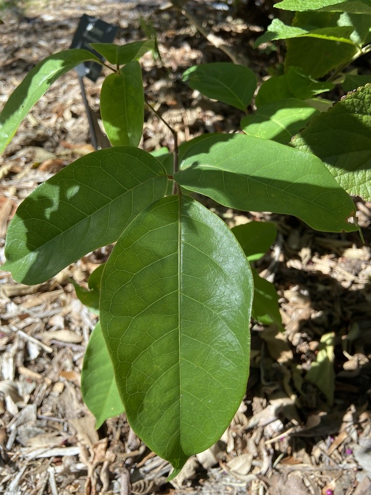

- The peeling red-green bark is so distinctive it earned this tree one of Florida's best nicknames: the Tourist Tree — because the bark is always red and peeling.
- A branch stuck in the ground roots readily — the Seminoles used living Gumbo Limbo fence posts that sprouted and grew.
- Larval host for the dingy purplewing butterfly, and the fatty red aril on its fruit is exactly what migrating songbirds need in spring.
- The Calusa used the sticky resin to trap songbirds for food and trade.
Native to coastal hardwood hammocks of southern Florida including the Florida Keys, the West Indies, and tropical America from Mexico south to Colombia and Venezuela. In Florida it is found at the northern edge of its natural range, making Manatee County specimens botanically significant.
- Gumbo Limbo wood is extraordinarily soft and light — so easy to carve it was the timber of choice for carousel horses before molded plastic replaced wood in the mid-20th century. It was also used for toothpicks, matchsticks, and rustic furniture.
- The resin has been used for varnish, glue, incense, and folk medicine across the Caribbean and Central America for centuries. The Calusa people of South Florida used the sticky resin to trap songbirds for food or trade.
- A Gumbo Limbo branch stuck directly in the ground will root and grow — the Seminoles used this property to create living fence posts that sprouted into trees. The same flexibility makes it famously hurricane-resistant: the wood bends rather than breaks, then springs back.
- The Tourist Tree nickname is irrefutable once you know it. The genus name Bursera honors Joachim Burser (1583–1649), a German physician-botanist.
The Gumbo Limbo is a top-tier bird tree. Its small capsules split to reveal a fatty, lipid-rich red aril that fruit-eating and migrating songbirds seek out as a high-energy food in spring — kingbirds and flycatchers are particularly documented visitors. Its inconspicuous flowers are a reliable bee food source. It serves as the larval host plant for the dingy purplewing butterfly (Eunica monima).
As a fast-rooting, hurricane-resistant native, it provides lasting canopy and nesting structure — and even a fallen branch can root and regrow into new habitat.
The main fruiting season is March and April. A fast self-propagator — cuttings and even large branches root readily when placed in the ground.
Small, greenish-white, inconspicuous, appearing spring through early summer. Not showy but a reliable bee food source.
Small three-valved top-shaped capsule encasing a single seed covered in a red, fatty aril. Both ripe and unripe fruits detach loosely and may drop spontaneously when the tree is shaken.
The defining feature — smooth, peeling in thin layers that curl up on themselves. Outer bark is coppery red to bronze with an almost varnished appearance; inner exposed bark is whitish to silver-gray. Resinous, with a faint turpentine scent.
Compound, with long relatively narrow leaflets arranged opposite each other. Semi-deciduous — drops leaves during drought or seasonally, but rarely completely bare.
The peeling coppery-red bark is unmistakable year-round and the single most reliable field ID feature in Florida. Run your hand along the trunk — the smooth, almost waxy texture beneath the peeling layers is distinctive. Watch for the red fruit clusters in spring and the birds they attract.
The fruits are edible but not especially palatable, and the resin has traditional medicinal uses — but it isn't a significant food plant.
It has no known toxicity to people or pets.


- © Pammy63 (CC-BY-NC), via iNaturalist
- © Randall Carter (CC-BY-NC), via iNaturalist